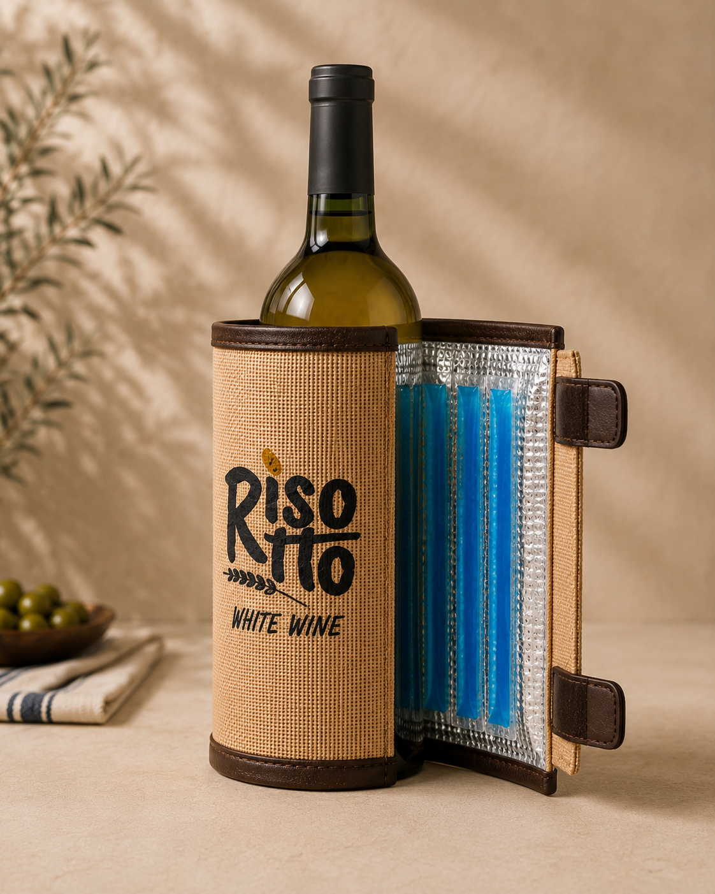

Collezione La Mutina
Premium
Finiture più ricercate e predisposizione per il sistema refrigerante rimovibile.

Il prodotto
Juta, finiture e freschezza in un unico gesto.
La versione Premium abbina il carattere materico della juta a finiture più definite. Può accogliere un inserto refrigerante rimovibile, studiato per avvolgere la bottiglia senza irrigidire il rivestimento. Nell’immagine il rendering è personalizzato per Risotto White Wine.
2 taglieØ 71–80 e Ø 81–90 mm
Cool systemInserto gel estraibile
MaterialeJuta naturale con finiture premium
PersonalizzabileLogo e dettagli su richiesta
Come funziona
Pronta per il servizio dei vini bianchi.
Inserisci il gel refrigerante
L’inserto interno è removibile e segue la struttura del rivestimento senza irrigidirlo.
Avvolgi la bottiglia
La chiusura laterale mantiene aderente il rivestimento e lascia il collo della bottiglia libero.
Servi con più controllo
La bottiglia resta ben presentata sulla tavola, contribuendo a preservare freschezza e immagine del brand.